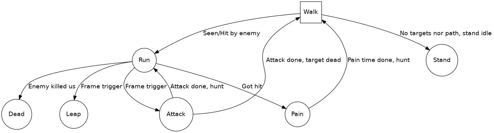

Quake 1 monsters are quite simple in nature. They make use of frame-based ticking where they advance in animation while executing any kind of callback.
Quake 1 defines several AI functions with which the monster feels alive and is able to find potential targets to hunt.
The first step in creating a monster is to create an animated model with all the animations you seek to make use of.
Quake 1 uses MDL model format which provides a sequence of frames we can use to animate the monster.
These frames are then annotated within the QuakeC code like:
$frame attack1 attack2 attack3 attack4 attack5 attack6 attack7 attack8
$frame death1 death2 death3 death4 death5 death6 death7 death8 death9
$frame deathb1 deathb2 deathb3 deathb4 deathb5 deathb6 deathb7 deathb8
$frame deathb9
$frame pain1 pain2 pain3 pain4 pain5 pain6The QuakeC pre-processor converts these to indexes that are used to specify which frame we want to use.
Each monster defines animations states by chaining a sequence of function calls that have intended side-effect (an action) assigned.
Say we look at the attack state:
void() dog_atta1 =[ $attack1, dog_atta2 ] {ai_charge(10);};
void() dog_atta2 =[ $attack2, dog_atta3 ] {ai_charge(10);};
void() dog_atta3 =[ $attack3, dog_atta4 ] {ai_charge(10);};
void() dog_atta4 =[ $attack4, dog_atta5 ] {
sound (self, CHAN_VOICE, "dog/dattack1.wav", 1, ATTN_NORM);
dog_bite();};
void() dog_atta5 =[ $attack5, dog_atta6 ] {ai_charge(10);};
void() dog_atta6 =[ $attack6, dog_atta7 ] {ai_charge(10);};
void() dog_atta7 =[ $attack7, dog_atta8 ] {ai_charge(10);};
void() dog_atta8 =[ $attack8, dog_run1 ] {ai_charge(10);};As you can see, each animation is represented by a chain of calls.
Method dog_atta4 also emits a sound while performing an attack on the target.
When we set up our monster, we fill out the monster info like:
self.th_stand = dog_stand1;
self.th_walk = dog_walk1;
self.th_run = dog_run1;
self.th_pain = dog_pain;
self.th_die = dog_die;
self.th_melee = dog_atta1;
self.th_missile = dog_leap1;When the ai_* AI methods are executed by the frame methods, they perform checks
on a possible target and switch states internally.
As a modder, if using the base game mode code, you can easily hack these methods to alter the AI. You can look at methods such as:
* FoundTarget
* ai_run
* HuntTargetand alter how monsters perceive the enemy.
This is a specific instance of the dog monster AI.
